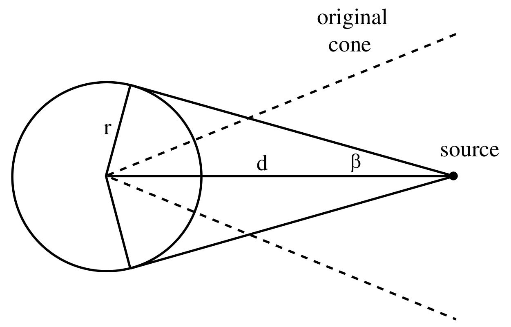
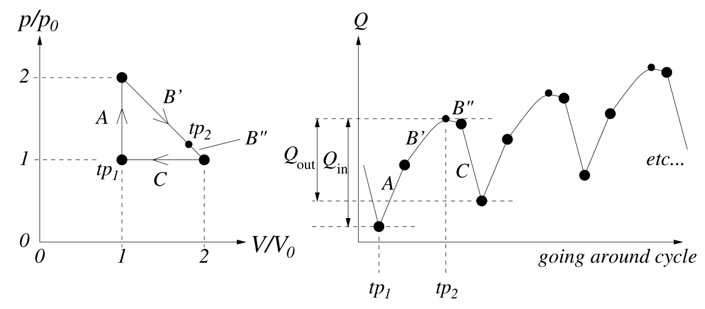

Boston Area Undergraduate Physics Competition — 풀이(Solutions)
공에 작용하는 마찰력을 $F$라 하자. 그러면 $F$는 접선 방향의 중력 성분을 상쇄해야 한다. 따라서 $F=mg\sin\theta$이다.
공에 작용하는 돌림힘(torque)은 $\tau=Fr$이다. $F=mg\sin\theta$를 쓰면 $\tau=mgr\sin\theta$이다. 이 돌림힘은 $I\alpha_b$와 같아야 하는데, 여기서 $\alpha_b$는 공의 각가속도(angular acceleration)이며 원통의 $\alpha$와 $\alpha_b=(R/r)\alpha$의 관계가 있다. 따라서 $\tau=I\alpha_b$로부터
\[mgr\sin\theta=\left(\frac25mr^2\right)\left(\frac Rr\alpha\right)\qquad\Longrightarrow\qquad\alpha=\frac{5g\sin\theta}{2R}.\tag{1}\]빛이 표면에서 튕겨 나올 때 반사각은 입사각과 같다. 따라서 어떤 빛줄기가 수신기에 닿는지를 판정하는 데 영상법(method of images)을 쓸 수 있다.
원뿔의 2차원 단면을 보면, 그림을 원뿔의 모서리에 대해 거듭 반사시키면 수신기가 반지름 $r$인 완전한 원이 된다는 것을 알 수 있다. 따라서 영상법에 따르면, 원래의 3차원 경우에 주어진 수신기는 원뿔의 꼭짓점을 중심으로 하는 반지름 $r$인 완전한 구가 된다.
따라서 주어진 문제는 다음 문제로 환원된다. 광원에서 나온 빛 가운데, 광원으로부터 거리 $d$인 점을 중심으로 하는 반지름 $r$인 구에 떨어지는 비율은 얼마인가? (주어진 꼭지각 $\theta$는 무관하다는 점에 유의하라.)

그림에서 보듯이, 반각(half-angle)이 $\beta$인 원뿔이 차지하는 입체각(solid angle)의 비율을 구해야 하며, 여기서 $\sin\beta=r/d$이다. 반지름 $R$인 구를 생각하면, 이 원뿔이 차지하는 구면 “모자(cap)”의 넓이는 모자를 원형 띠들로 잘라서 구할 수 있다. 모자의 꼭대기로부터 벗어난 각을 $\alpha$라 하면, 대응하는 원의 둘레는 $2\pi(R\sin\alpha)$이므로, 모자의 넓이에 대한 적분은
\[A=\int_0^\beta(2\pi R\sin\alpha)(R\,d\alpha)=-2\pi R^2\cos\alpha\Big|_0^\beta=2\pi R^2(1-\cos\beta).\tag{2}\](역주: 원문에는 “반지름(radius)이 $2\pi(R\sin\alpha)$”라고 적혀 있으나, $2\pi R\sin\alpha$는 원의 둘레이다.)
따라서 전체 넓이에 대한 비율은
\[\text{비율}=\frac{A}{4\pi R^2}=\frac12(1-\cos\beta)=\frac12\left(1-\frac{\sqrt{d^2-r^2}}{d}\right).\tag{3}\](물론 $r>d$이면 비율은 1이다.)
평면이 가하는 수직항력(normal force)은 $N=mg\cos\theta$이므로 마찰력은 $\mu N=mg\sin\theta$이다. 이 힘은 운동과 반대 방향으로 작용한다. 또한 경사면 아래쪽을 향하는 크기 $mg\sin\theta$의 중력이 있다.
이 두 힘의 크기가 같으므로, 운동 방향의 가속도는 경사면 아래 방향 가속도의 음수와 같다. 따라서 짧은 시간 동안 토막이 운동 방향으로 잃는 속력은 경사면 아래 방향으로 얻는 속력과 정확히 같다. 토막의 속력을 $v$, 경사면 아래 방향 속력 성분을 $v_y$라 하면, 다음을 얻는다.
\[v+v_y=C,\tag{4}\]여기서 $C$는 상수이다. $C$는 처음 값으로 주어지며 이는 $V+0=V$이다($V$는 토막의 처음 속력). $C$의 나중 값은 $V_f+V_f=2V_f$인데($V_f$는 토막의 나중 속력), 아주 오랜 시간이 지나면 토막은 실질적으로 경사면을 똑바로 따라 내려가기 때문이다. 따라서
\[2V_f=V\qquad\Longrightarrow\qquad V_f=V/2.\tag{5}\]열역학 제1법칙(first law of thermodynamics; 에너지 보존)에서 시작하자.
\[dQ=dU-dW\tag{6}\]여기서 $dQ$는 계에 더해진 미소 열량, $dU$는 내부 에너지(internal energy)의 변화, $dW$는 계에 해 준 미소 역학적 일이다.
계의 상태 공간에서 임의의 닫힌 고리를 한 바퀴 도는 것을 생각하자. ‘상태’란 압력 $p$, 부피 $V$, 온도 $T$를 뜻한다. 우리 계에서는 이 가운데 아무 2개를 알면 나머지 하나가 정해진다. 예를 들어 $T$는 이상 기체 법칙으로 주어지는 $(p,V)$의 함수이다. $U$는 상태만의 함수이므로, 닫힌 고리를 따라 $dU$ 변화를 모두 더하면 0이어야 한다. 따라서 고리를 한 번 돌 때 $\Delta Q=-\Delta W$이다. 역학적 일은 부피 변화로 생기므로
\[dW=-p\,dV,\tag{7}\]따라서 닫힌 고리를 따른 $dW$의 적분은 단지 $(p,V)$ 평면에서 둘러싸인 넓이의 음수이다(지금처럼 시계 방향 고리의 경우). 그러므로 고리를 한 번 돌 때마다
\[Q_{\rm in}-Q_{\rm out}=\Delta Q=-\Delta W=(p,V)\text{에서 둘러싸인 넓이}=\tfrac12p_0V_0.\tag{8}\]문제에 주어진 상수 $P$와 $V$에는 더 편리한 기호 $p_0$와 $V_0$를 붙였다.
이로써 효율(efficiency)을 주는 분수의 분자를 구했다(아래의 방법들로 이 분자를 구했어도 괜찮다). 이제 남은 것은 분모 $Q_{\rm in}$뿐이다.
내부 에너지 $U=\frac32nkT$가 주어졌는데, 여기서 $n$이 입자의 몰수가 아니라 입자의 개수라는 것을 알아차려야 한다. $n$이 기체 상수 $R$이 아니라 볼츠만 상수(Boltzmann's constant) $k$와 곱해져 있으므로 이는 분명하다. 이상 기체에 대해
\[pV=NRT\quad\text{또는 동등하게}\quad pV=nkT,\tag{9}\]여기서 $N$은 몰수이고 $n$은 입자 수이다($n$과 $N$의 통상적인 표기와 서로 바뀌어 있음에 유의하라). 두 번째 꼴이 우리에게 유용한데, 이로부터 내부 에너지를 다음과 같이 쓸 수 있기 때문이다.
\[U=\tfrac32pV.\tag{10}\]이제 경로의 어느 구간에 대해서든 $T$를 명시적으로 언급하지 않고 $\Delta U$를 구할 수 있다.

경로 전체를 고려하여, 열의 흐름($dQ$의 부호)이 방향을 바꾸는 ‘전환점(turning point)’(오른쪽 그림의 $tp_1$과 $tp_2$)을 찾아야 한다. 그러면 $Q_{\rm in}$은 경로의 한쪽 길을 따라 이 전환점들 사이에서 적분한 값이다(그리고 $Q_{\rm out}$은 다른 쪽 길을 따라 되돌아오는 같은 적분이다). 삼각형의 각 변 A, B, C(왼쪽 그림 참조)에서 $Q$가 어떻게 변하는지 구해야 한다.
구간 A: 부피 변화가 없으므로 $\Delta W=0$이다. 압력이 두 배가 되므로 $U$는 $\frac32p_0V_0$에서 그 두 배로 변했고, 따라서 $\Delta Q=\Delta U-\Delta W=+\frac32p_0V_0$이다.
구간 C: 압력 변화가 없으므로 일 적분 $\Delta W=-\int p\,dV$는 단순히 $-p\,\Delta V=p_0V_0$이다. $U$는 구간 A 끝에서의 값으로부터 원래 값으로 돌아가므로 $\Delta U=-\frac32p_0V_0$이다. 이 둘을 합하면 $\Delta Q=-\frac52p_0V_0$이다. 여기서 부호를 확인하는 것이 중요했다. 두 효과가 합쳐져 열 방출을 늘린다.
구간 A와 C에서 $dQ$에 대한 위의 고찰로부터, 전환점 하나는 그림에 보인 $tp_1$임이 분명하다.
구간 B: 이 과정은 등온 변화(isothermal change)가 아니다(등온 변화라면 $pV=$ const로 정의되는 쌍곡선에 해당하고, 구간 전체에서 $dQ>0$일 것이다). 또 이 구간을 따라 $\Delta U=0$이므로(시작과 끝의 $T$가 같다) $\Delta W$를 구하면 문제가 끝난다고 생각하기 쉽다. 그렇지 않다! 구간 끝부분에서 $T$(따라서 $U$)가 떨어지는 동안 $W$도 떨어지므로(일을 계가 한다), 구간을 따라 $dQ$의 부호가 바뀌어서 $tp_2$가 구간 도중 어딘가에서 생길 가능성이 있다.
단위 없는 수 $x=[1,2]$로 구간을 매개변수화하면 $p(x)=p_0(3-x)$, $V(x)=V_0x$이다. 따라서
\[dQ=dU-dW=\tfrac32(p\,dV+V\,dP)+p\,dV=\frac{p_0V_0}{2}(15-8x)\,dx,\tag{11}\]여기서 미분 $dp=-p_0dx$와 $dV=V_0dx$를 썼다. 분명히 $dQ$는 $15-8x=0$, 즉 $x=15/8$에서 부호가 바뀐다. 이 전환점은 $T$가 최대가 되는 $x=3/2$(구간의 중간)에 있지 않다는 것에 유의하라. 이 전환점의 위치는 단열성(adiabaticity)($dQ=0$)의 판정 조건, 즉 $dp/dV=-\gamma p/V=-\frac53p/V$를 고려해서도 구할 수 있다.
이 전환점에서 구간을 그림처럼 B′과 B″으로 나누면, 구간 B′에서의 열 입력만 필요하다.
\[\Delta Q=\int_{x=1}^{x=15/8}dQ=\frac{p_0V_0}{2}\int_{x=1}^{x=15/8}(15-8x)\,dx.\tag{12}\]$x$ 적분은 약간 정리하면 $[15x-4x^2]_1^{15/8}=\frac{49}{16}$이므로 $\Delta Q=+\frac{49}{32}p_0V_0$이다.
구간 A와 B의 $\Delta Q$를 더하면 $Q_{\rm in}=(\frac32+\frac{49}{32})p_0V_0=\frac{97}{32}p_0V_0$이며, 솔직히 약간 지저분한 분수이다.
마지막으로 효율은
\[\epsilon=\frac{Q_{\rm in}-Q_{\rm out}}{Q_{\rm in}}=\frac{\frac12p_0V_0}{\frac{97}{32}p_0V_0}=\frac{16}{97}=0.1649\cdots\quad\text{즉 약 }16.5\%\tag{13}\]이 값은 $tp_2$가 오른쪽 아래 꼭짓점에 있다고 가정했을 때 얻는 틀린 답 $1/6$에 매우 가깝다는 것에 유의하라.
시각 $t$에 띠의 움직이는 끝은 벽으로부터 거리 $\ell(t)=L+Vt$에 있다. 개미가 벽으로부터 떨어진 거리를 $r(t)$라 하자.
띠를 따른 개미 위치의 비율 $F(t)=r(t)/\ell(t)$를 생각하자. 주어진 질문은 다음과 같다. (도대체 그런 때가 있다면) 어떤 $t$ 값에서 비율 $F(t)$가 0이 되는가? $F(t)$가 시간에 따라 어떻게 변하는지 살펴보자.
미소 시간 $dt$ 뒤에, 개미의 위치 $r$은 늘어남 때문에 $(r/\ell)V\,dt$만큼 증가하고, 기어감 때문에 $u\,dt$만큼 감소한다. 따라서
\[\begin{aligned}F(t+dt)&=\frac{r+(r/\ell)V\,dt-u\,dt}{\ell+V\,dt}\\&=\frac r\ell-\frac{u\,dt}{\ell+V\,dt}.\end{aligned}\tag{14}\]$dt$의 1차까지 이는 다음을 준다.
\[F(t+dt)=F(t)-\frac u\ell dt.\tag{15}\]다시 말해, 시간 $dt$ 동안 개미가 길이가 대략 $\ell(t)$인 띠에 대해 상대적으로 거리 $u\,dt$를 기어가기 때문에 $F(t)$가 감소한다. 식 (15)로부터
\[\frac{dF(t)}{dt}=-\frac u\ell.\tag{16}\]$\ell(t)=L+Vt$를 쓰고 식 (16)을 적분하면
\[F(t)=1-\frac uV\ln\left(1+\frac VLt\right),\tag{17}\]을 얻는다. 여기서 적분 상수는 $F(0)=1$을 만족하도록 골랐다.
이제 $u$가 어떤 양수 값이든, 다음과 같이 고르면 $F(t)=0$이 되게 할 수 있다는 것을 알 수 있다.
\[t=\frac LV\left(e^{V/u}-1\right).\tag{18}\]$V/u$가 매우 크면 개미가 벽에 닿는 데 걸리는 시간은 지수적으로 커지지만, 실제로 유한한 시간 안에 닿는다.
$V/u$가 매우 작으면, ($e^x\approx1+x$를 써서) (18)은 당연히 그래야 하듯이 $t\approx L/u$로 줄어든다.
몇 가지 간단한 예를 보면 문제의 답이 $(N-1)\,\Omega$임을 짐작할 수 있다. 이것을 일반적으로 증명해 보자. (중첩(superposition) 논증을 쓴다.)
$1\,\Omega$ 저항기 하나로 연결된 두 점 $A$와 $B$를 생각하자. $A$로 전류 $I$를 넣고 $B$에서 전류 $I$를 빼내면, $A$와 $B$ 사이의 유효 저항(effective resistance)은 $V/I$이며, 여기서 $V$는 두 점 사이의 퍼텐셜 차이다.
전류 $I$가 $A$로 들어가서 $B$로 나오는 상황은 두 배치의 중첩으로 볼 수 있다. (1) $A$로 전류 $\frac{N-1}{N}I$를 넣고 나머지 $N-1$개의 점 각각에서 전류 $\frac1NI$를 빼낸다. (2) $B$에서 전류 $\frac{N-1}{N}I$를 빼내고 나머지 $N-1$개의 점 각각에 전류 $\frac1NI$를 넣는다.
첫 번째 배치에서 $A$에서 $B$로 가는 전류를 $I^A_{A\to B}$라 하자. 두 번째 배치에서 $A$에서 $B$로 가는 전류를 $I^B_{A\to B}$라 하자. (여기서 위첨자는 $\frac{N-1}{N}I$의 전류가 들어가거나 나오는 점을 나타낸다.) 그러면 합친 배치에서 $A$에서 $B$로 가는 전류는 $I^A_{A\to B}+I^B_{A\to B}$이다. 이 전류가 $1\,\Omega$ 저항기를 지나므로, $A$와 $B$ 사이의 전압 차는 $V=(I^A_{A\to B}+I^B_{A\to B})(1\,\Omega)$이다. 따라서 $A$와 $B$ 사이의 유효 저항은
\[R_{AB}=(I^A_{A\to B}+I^B_{A\to B})(1\,\Omega)/I.\tag{19}\]이제 이 $R_{AB}$ 기여를 모든 저항기에 대해 더해야 한다. 구하려는 합을 $S$라 하자. 그러면
\[S=\sum_{A,B}(I^A_{A\to B}+I^B_{A\to B})(1\,\Omega)/I,\tag{20}\]여기서 합은 저항기로 연결된 모든 점의 쌍 $A,B$에 대해 취한다. $A$와 $B$의 역할을 바꾸면 다음과 같이 쓸 수도 있다.
\[S=\sum_{A,B}(I^B_{B\to A}+I^A_{B\to A})(1\,\Omega)/I.\tag{21}\]앞의 두 식을 더하면
\[2S=\sum_{A,B}(I^A_{A\to B}+I^B_{B\to A})(1\,\Omega)/I+\sum_{A,B}(I^A_{B\to A}+I^B_{A\to B})(1\,\Omega)/I.\tag{22}\]첫 번째 합은 단순히 위의 “1” 유형 배치 $N$개 모두에서 $N$개의 점으로 들어가는 $N$개 전류의 합이다. (구성에 의해) 각 점으로 $\frac{N-1}{N}I$의 전류가 들어가므로, 첫 번째 합은 $(N-1)(1\,\Omega)$와 같다. 마찬가지로 두 번째 합은 위의 “2” 유형 배치 $N$개 모두에서 $N$개의 점으로부터 나오는 $N$개 전류를 다루므로, 이것도 $(N-1)(1\,\Omega)$와 같다. 따라서 식 (22)로부터
\[S=(N-1)\,\Omega.\tag{23}\]